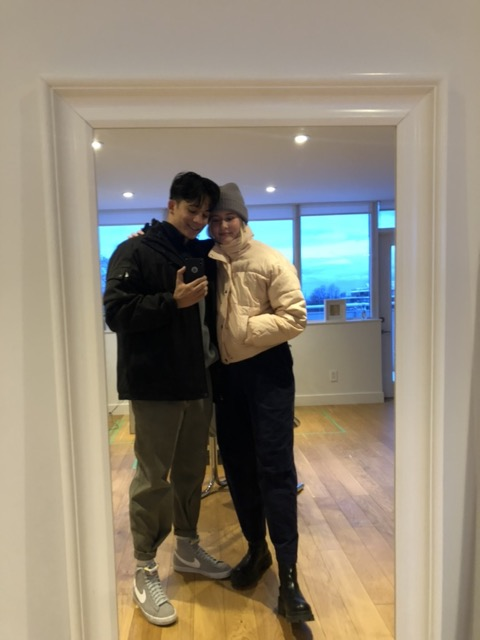
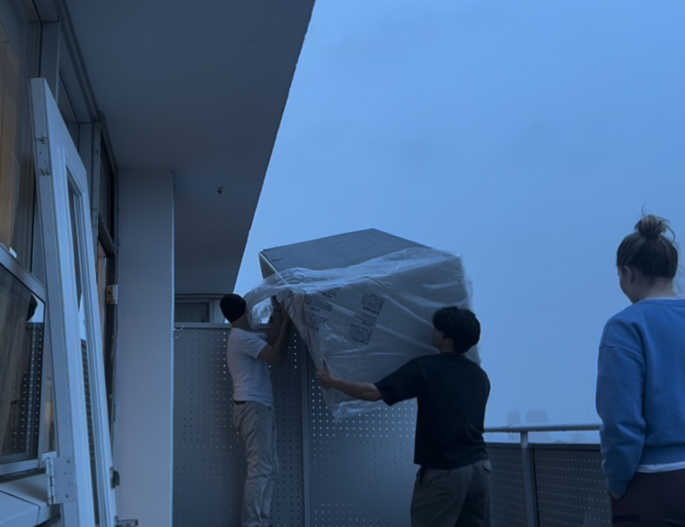
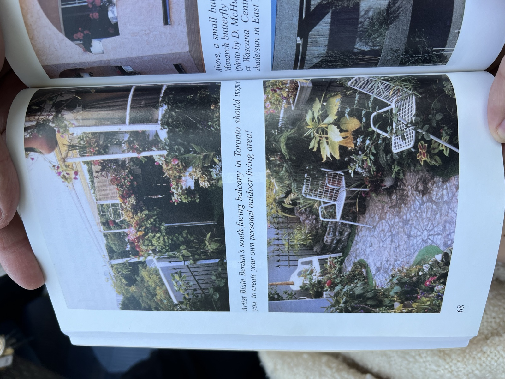
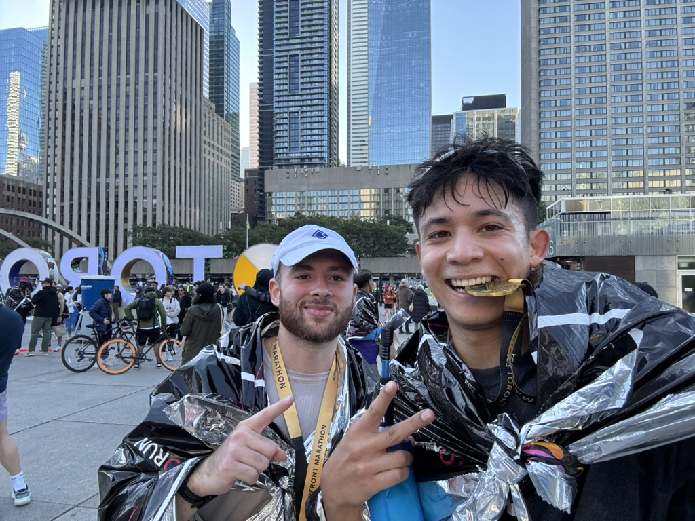

My Neighbours

How It Started
At the beginning of 2024, my girlfriend and I decided to move in together. We found a cozy apartment in the Leaside area, and since then, I’ve grown to truly appreciate the nearby shops and restaurants within walking distance. More importantly, I’ve come to value the wonderful residents we’ve met in our building.
This blog post is a small tribute to the people who have made our new home feel even more special.
Jim
It was a sunny afternoon when our brand-new couch was delivered. The only problem? It didn’t fit in the elevator. The couriers gave us two options: wait for a special team or figure it out ourselves. Naively, we chose the latter.
After four months of sitting on a bean bag and loveseat, we were determined to make this couch work. But the narrow stairwell wasn’t cooperating. Twenty minutes in, we were sweating and discouraged, realizing we might have to return it.
That’s when Jim stepped in. Without hesitation, he offered to help, calmly assuring us that he’d seen this situation before. He believed we could get it in the elevator if we positioned it just right—and he was right. We made it to our floor, only to find that the hallway bend and our front door posed a new problem.
It took two more hours of maneuvering, brainstorming, and ultimately removing balcony doors and passing the couch over the barricade between our balcony and our neighbor’s, but we did it—with Jim right there the whole time.
We’ll never forget his selfless help and positive energy. He gave two hours of his day to complete strangers, and for that, we are endlessly grateful.

Betty
If there’s anyone who knows this building inside and out, it’s Betty. She’s lived here for over 40 years and seems to know every detail—from quirky past tenants to obscure bylaws.
One day, she shared a fun piece of history: a former resident of our unit had turned the balcony into a lush garden, so much so that it was featured in a Toronto book from the 1980s. (There’s a photo below of what our balcony used to look like.)
Betty doesn’t just know the building’s past—she keeps tabs on its future. She recently informed me of a bylaw change affecting when landlords are required to provide heat. I was skeptical when she warned that the building would get cold with the boilers off, especially since I live on the top floor.
But she was right. A few days later, as the rain rolled in and the temperature dropped, I was freezing inside despite wearing layers. That same evening, management emailed everyone to say the boilers would be turned back on—no doubt thanks to Betty’s persistence.

Anthony
Last fall, my girlfriend and I signed up for my first half marathon. Unfortunately, she injured her leg and couldn’t train or compete with me. I suddenly found myself without a training partner—until I discovered that Anthony, one of our neighbors, had also registered for the race.
We started running together—morning jogs, Sunday long runs—and quickly became solid training partners. We ran that half marathon side by side (he beat me by a minute), and went on to complete a full marathon and a half-marathon relay together.
Running with Anthony has kept me motivated, consistent, and faster. He’s not just a great runner, but a great person to chat with over long distances.

Special Shoutouts
There are others in the building whom I haven’t gotten to know as well, but who have still made an impact:
- Cameron – Loaned us a rehab machine to support my girlfriend’s recovery until we found a better solution.
- Mike – Our next-door neighbor, generously helped with the infamous couch move.
- The couple on the third floor – I don’t know their names, but they’ve helped transport my girlfriend to her physio appointments.
As we continue to settle into our home, I’m looking forward to the people we’ll meet and the connections we’ll build. It’s been such a welcoming experience so far, and I’m excited for the chance to pay it forward.